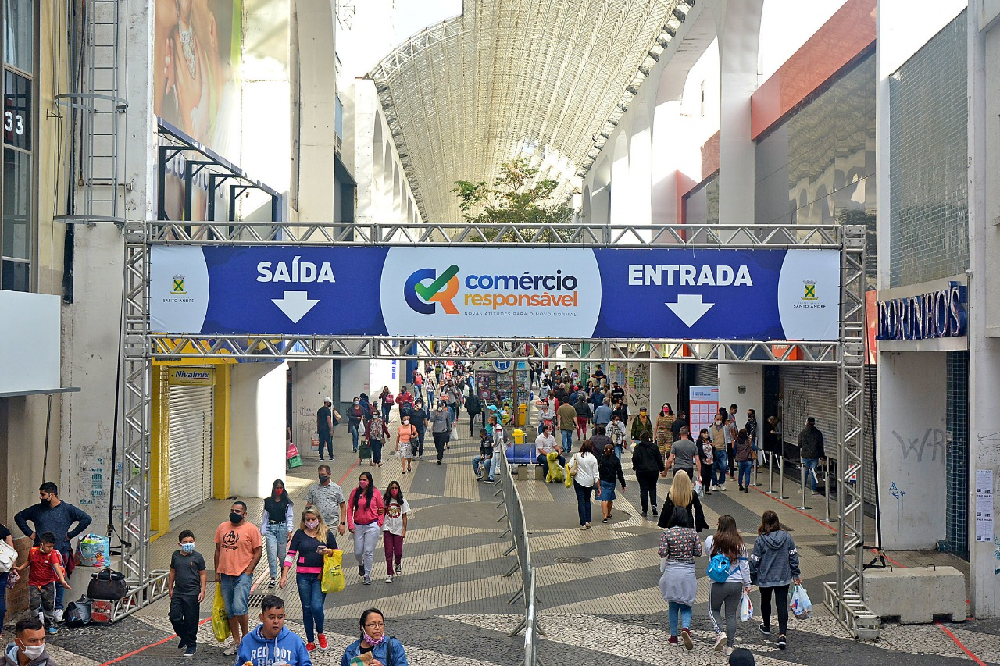
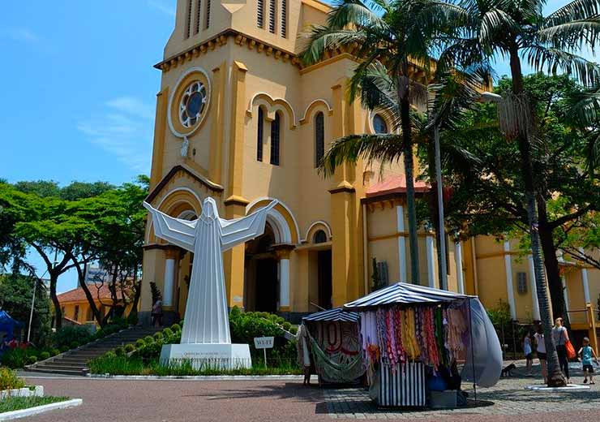
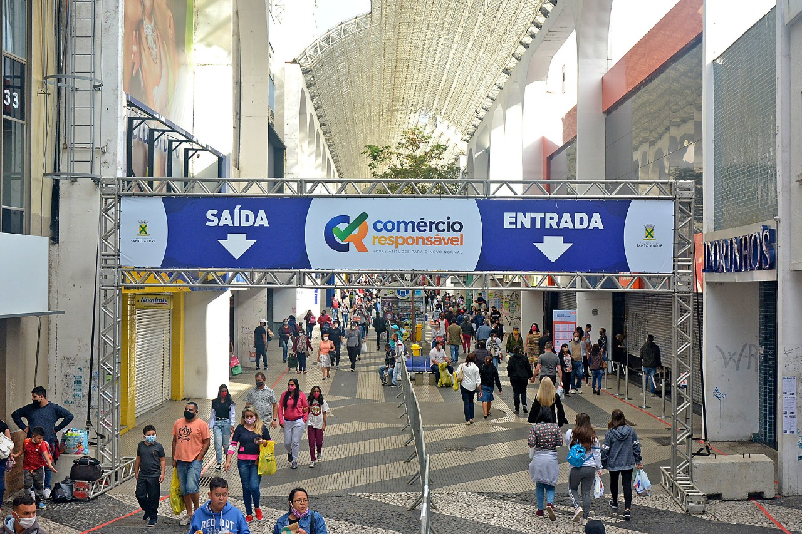
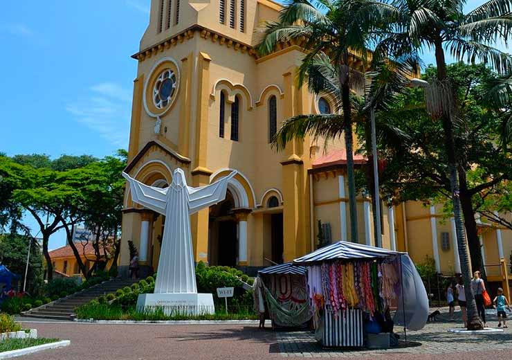
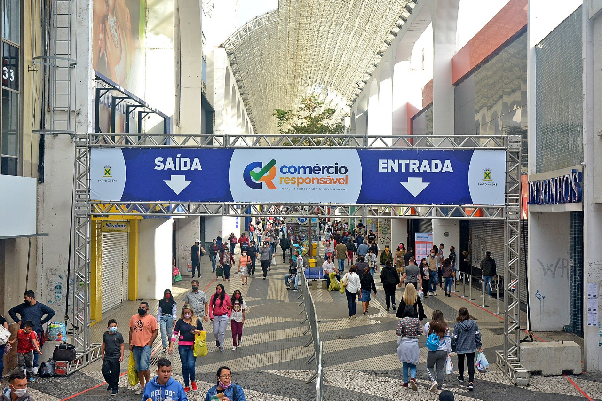
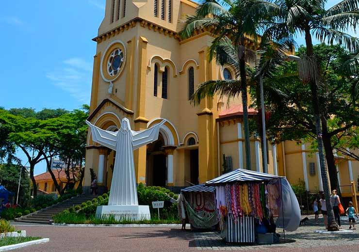
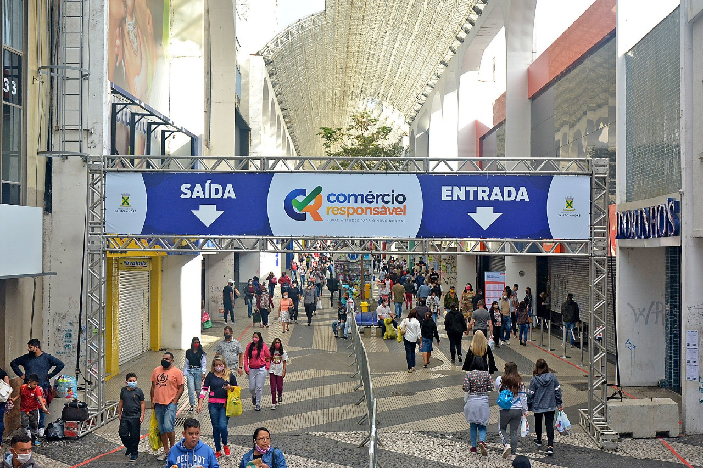
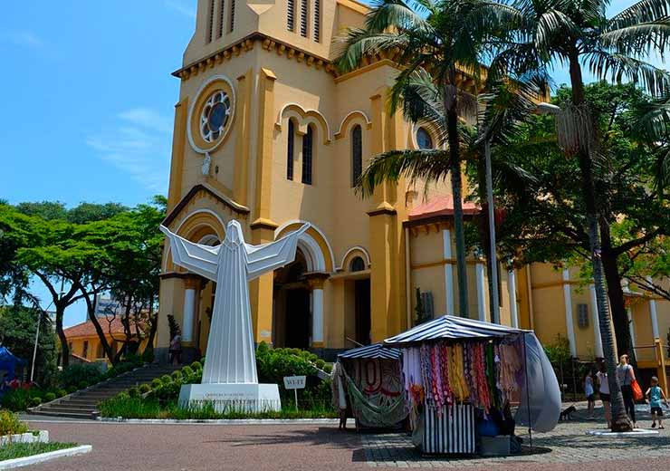

 



No início do século 16 os países que tivessem terras onde pudessem explorar as riquezas minerais, em especial ouro e prata, estavam à frente dos demais pois essas eram as moedas correntes, indicadoras de riqueza. Explica-se por aí o interesse pelas terras dessa vasta colônia portuguesa. Devido a vários ataques às suas terras, a partir de 1530, Portugal intensificou a colonização das costas brasileiras. Nesse contexto é enviado para cá, por ordem de Dom João III, rei de Portugal, Martim Afonso de Souza com a incumbência de fundar vilas para fortificar o litoral.
Parque Regional da Criança Palhaço Estremilique,O Parque Regional da Criança é cercado por área densamente arborizada, com playground, pista para caminhada, equipamentos para ginástica, sanitários, quadra de tênis e uma pequena arena. O espaço concentra, ainda, uma escola municipal de iniciação artística, com oferta de cursos de música e arte voltados à população. Aos sábados, o local abriga uma feira de artesanato.
Sabina Escola Parque do Conhecimento é uma instituição pública subordinada à Secretaria Municipal de Educação do município de Santo André. No local, é proporcionado aos visitantes a interação em experimentos lúdicos científicos, além de integrar laboratórios, bibliotecas multimídia e o Planetário Johannes Kepler.
O parque Central é uma boa opção para caminhar, tirar fotos e fazer um piquenique agradável. Bem extenso com pistas para quem quer correr, andar de bicicleta ou simplesmente fazer uma caminhada. Parquinho para crianças.
| Nome do prefeito | Ano eleito | Partido | |
|---|---|---|---|
| Paulo Henrique Pinto Serra | 1º de janeiro de 2021 | PSD | Atual |
| Paulo Henrique Pinto Serra | 1º de janeiro de 2017 | - | |
| Carlos Alberto Grana | 1º de janeiro de 2013 | - | |
| Aidan Antônio Ravin | 1º de janeiro de 2009 | - |
| Dados tecnicos baseados em 6 pontos , sendo eles Populaçao, trabalho e rendimento, educação, economia, saúde, território e ambiente | ||
|---|---|---|
| POPULAÇÃO | População estimada [2021] | 723.889 pessoas |
| TRABALHO E RENDIMENTO | Salário médio mensal dos trabalhadores formais | 2,7 salários mínimos |
| EDUCAÇÃO | Matrículas no ensino fundamental | 83.592matrículas |
| ECONOMIA | PIB per capita | R$ 42.209,54 |
| SAÚDE | Mortalidade Infantil | 7,68 óbitos por mil nascidos vivos |
| TERRITÓRIO E AMBIENTE | Área da unidade territorial | 175,782km² |
Todos os dados usados na tabela sao fornecidos pelo IBGE : Site do IBGE